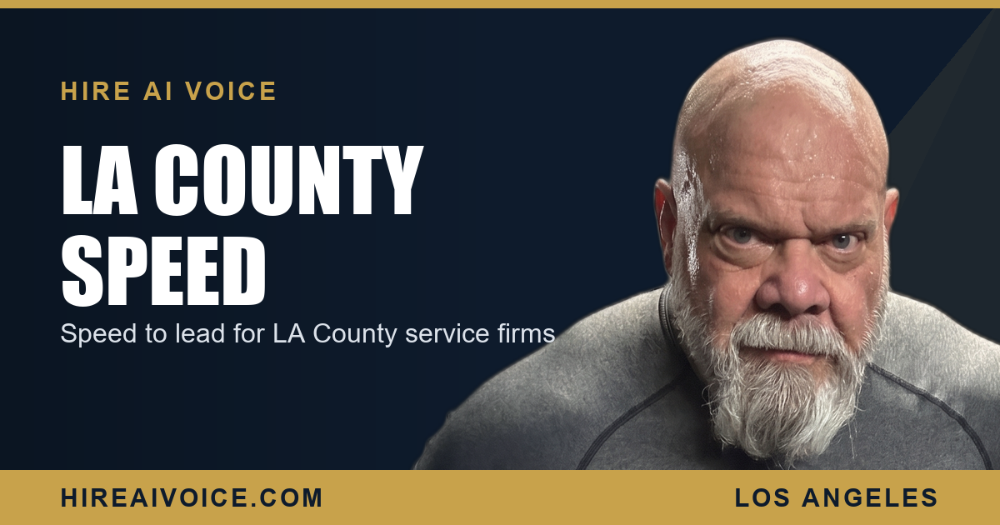

Speed to Lead for Los Angeles County Service Companies

The Short Version
- Los Angeles County is one of the biggest, most competitive service markets in the country. Speed to lead matters more here than almost anywhere.
- Customers do not call one company. They call several at once and hire the first one to answer and start solving the problem.
- In a market this dense, slow response is the difference between a full schedule and an empty one. The job is lost on speed, not on price.
- A 24/7 AI voice agent answers every call instantly across your whole LA County footprint, so your response time is zero at scale.
- Missed-call text-back is the safety net underneath it, so even a missed call never goes cold.
Why Does Speed to Lead Matter So Much in Los Angeles County?
Because Los Angeles County is one of the largest and most crowded service markets in the country, and the customer almost never calls just one company. Nearly 10 million people live here, spread across hundreds of cities and neighborhoods, and for any given job there are dozens of companies competing for the same call. When something breaks, the customer pulls up a list and starts dialing down it. The first business to answer and start solving the problem usually wins the job.
That changes the math completely. In a small town, a missed call might mean the customer waits an hour and calls you back. In LA County, they have already dialed two more companies before your voicemail finishes playing. The market does not give you a second chance. It hands the job to whoever picks up first.
How Fast Do You Have to Respond in a Market This Big?
Instantly, or at least within 5 minutes. Lead-response research has found the same pattern for years: respond within 5 minutes and you are dramatically more likely to actually connect and book the job than if you wait even 30 minutes. In a dense, competitive market like Los Angeles County, that window is even tighter, because the customer is not waiting on you. They are working their way through a list of your competitors at the same time.
Picture a homeowner in Burbank with a dead AC unit in August, or a property manager in Long Beach staring at a flooded unit. They are not leaving a careful voicemail and waiting. They are calling the next three names on the list until a human answers. In LA County, that list is long, and the first to answer takes the job.
Why Do LA County Service Businesses Lose the Race?
Because the work keeps you off the phone, and the competition never lets up. A tech stuck on the 405, a plumber under a sink, a roofer on a ladder, an owner buried in a packed day. You physically cannot answer every call live, and in this county the calls come in fast and from everywhere at once. The moment you cannot pick up, the lead hits voicemail and immediately dials the next of many nearby companies.
You did not lose the job on price. You lost it to whoever picked up while you were stuck in traffic.
So the call rolls to voicemail. The customer hangs up, because 62% of callers who hit voicemail simply call your competitor, and 85% never try you again. That lead is gone, and you never even knew it existed. Multiply that across a county this size, where missed calls come in all day from every direction, and the leak is enormous. For most LA County service businesses, the biggest source of lost revenue is not the ad budget. It is the calls that already came in and got missed.
How Does an AI Voice Agent Win It at Scale?
An AI voice agent answers every inbound call the instant it rings, 24 hours a day, across your entire Los Angeles County service area. Whether you are on a job in Santa Clarita, crossing the valley, or asleep, it picks up. It greets the caller by your business name, answers their questions, qualifies what they need, and books the appointment on the spot. Your effective response time drops to zero, and it stays zero no matter how many calls come in at once.
That last part is what matters in a market this size. A human receptionist can only take one call at a time, and on a busy LA County day the calls stack up fast. An AI agent answers all of them, the same way, every time. This is the whole point of an AI receptionist that never sleeps: it closes the exact gap that empties your schedule. The customer with the burst pipe at 9 PM gets a warm, instant conversation and a booked appointment, while your competitor's phone is still ringing into the void.
What About the Calls That Slip Through?
Even with 24/7 answering, you want a backstop, and that is missed-call text-back. The moment any call is not answered live, the system fires off a text within seconds: "Sorry we missed you, this is [your business], how can we help?" The conversation keeps going instead of ending. The lead stays warm in a text thread instead of dialing the next company on a very long list. In a market like Los Angeles County, that safety net is the difference between a missed call being a dead end and being the start of a booked job.
What Should an LA County Owner Do This Week?
You do not need a bigger ad budget to win here. You need to stop leaking the leads you already paid for. Three moves:
1. Measure it. For one week, track how many calls you actually answer live versus how many roll to voicemail. In a county this busy, the number will shock you, and it is your hidden revenue leak.
2. Put a 24/7 answer in place. An AI voice agent that picks up every call and books the appointment turns your worst response times into your best ones across your whole footprint, overnight.
3. Add the text-back safety net, so no missed call ever goes cold.
The companies winning in Santa Clarita and across Los Angeles County are not the ones with the biggest ad spend. They are the ones who answer first, every time, no matter how many calls come in. Speed to lead is the lever. In a market this big, pull it.
Make Your Response Time Zero
Our AI voice agent answers every call 24/7, books the job, and follows up automatically. Live in 72 hours. $297/month, no contracts. Or call Sarah, our live agent, and hear it yourself.